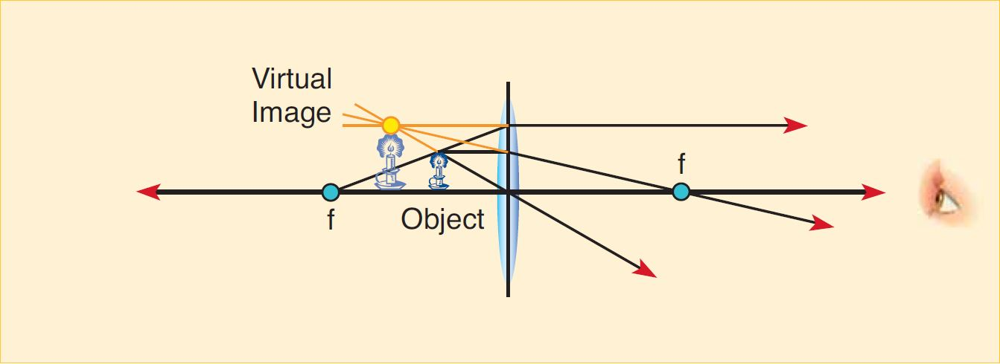
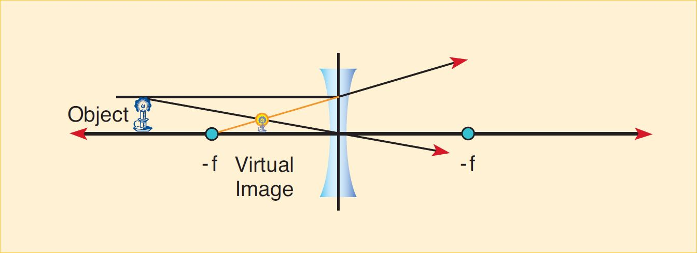
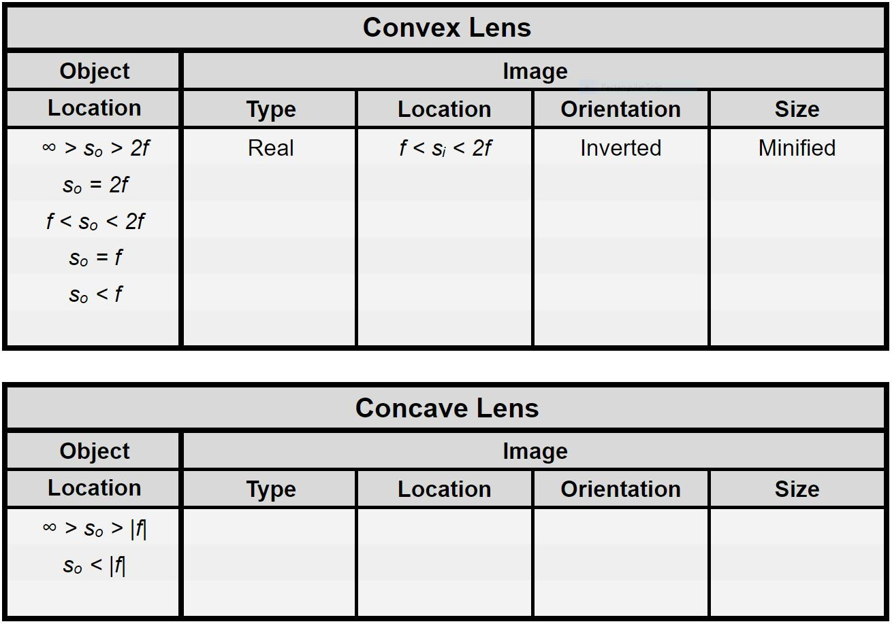

Make sure to include all tables, plots, pictures, drawings, screenshots or anything else asked of you in the exercises in your report, as well as answers to all the questions.
All responses and answers should contain the correct number of sig figs and should include units when needed.
In the last lab you studied the bending of a single ray of light at a boundary between two materials, a process known as refraction. The important aspects of refraction are the indices of refraction of the materials and the incident angle the light makes with the boundary. In this lab we will study the refraction of multiple rays of light emitted from a single point source as they reach the boundary at the front surface of a lens, then exit through the boundary at the rear surface.
A lens is an object that consists of a material of index of refraction and two spherical boundaries. The shapes of the boundaries are designed such that when multiple rays of light emitted by a single point source pass through the lens, they converge to a unique point, known as the image point. The lens thus creates an image of the point source.
We will consider two common types of lenses, convex and concave lenses. Convex lenses are those that bulge outward in the center, with the edge being the most narrow part. Because light passing through such lenses converges to a point on the other side as described above, these are known as converging lenses. Concave lenses are those that are thicker on the outside and thinner towards the center. Later in this lab, we will examine the behavior of concave lenses, which is different from that of convex lenses.
Exercise 1
In this exercise you will explore the relationship between the curvature of a lens and its focal length. In Video 2 you will be shown three different lenses. They will appear first in profile, so that you can see their curvatures. The thicker a lens is at its center, the greater the curvature. Next you will see the light source, in this case a ceiling light. This is the object that will be focused by the lens to the paper below. The lenses will be moved up and down until the light is focused. Note the distance between the lens and the paper when the image is focused. Consider the relationship between this distance and the lens’s curvature.
When a source is very far away, the image appears at the focal point of the lens. Let’s consider the ceiling light to be very far from the lenses. Thus the light from the ceiling is converging at the focal point of the lenses. The distance between the lens and the focal point is the focal length. Because for a convex lens the focal length is positive, this type of lens is also sometimes called a positive lens.
Question 1
Is there a relationship between the curvature of a lens and its focal length?
*Note: A concave lens does not focus parallel light to a point.
Simulation 1 shows how lenses act in two dimensions. Play with the system by dragging the focal point along the optical axis. Moving the focal point to the left of the lens converts the blue convex lens to a red concave one. Use the simulation to explore your answer to question 1.
Exercise 2
In this exercise we will be more quantitative about the focal lengths. We will show you a video of five parallel rays passing through two lenses. We will do this with a concave and a convex lens over graph paper. You will be measuring the focal lengths of these lenses.
Note: The graph paper used is 4 boxes per inch.
Pause the video when the convex lens is in place.
Measure the focal length in units of boxes.
Notice that for the concave lens the light does not converge. For this reason we must trace the light backwards. Make the video pause when the concave lens is in place and the traced lines have appeared.
Measure this distance in units of boxes.
Convert both of your measurements to mm.
Question 2
What focal lengths did you measure?
Exercise 3
In this exercise we will look at a lens that deviates from the thin lens approximation, specifically one that does not focus all parallel light to a single point. Lenses like this are said to have aberrations. In this video, five parallel rays pass through a thick, D-shaped lens.
Pause the video when the D-block is in place.
You will notice that the rays do not converge to one point. Measure the focal lengths for the inner and outer pairs of rays from the flat side of the lens.
Question 3
What are the focal lengths of the lens for these two pairs of rays?
Question 4
Measured from the flat surface, at what distances do the rays converge? What is the difference between the two distances (let's call this the focal length spread)?
Question 5
a. Measured from the flat surface, at what distances do the rays converge? What is the difference between the two distances (the focal length spread)?
b. Does the D-block lens have symmetrical behavior? That is to say, is the focal length spread in the two scenarios the same?
c. Which scenario has a smaller focal length spread and thus less spherical aberrations? How should you place the D-block in order to minimize spherical aberrations?
An object is some physical entity that either produces light rays of its own (like a light bulb) or reflects them from some other light source (like this text, or your pencil). The image is a version of the object as it appears after light coming from it has gone through some optical device, in this case a lens. In the remainder of this lab we will explore how lenses form images, and how the placement of a lens relative to an object determines the location and relative size of the image, and whether it is upright (erect) or inverted.
We use ray tracing methods to predict the behavior of a lens. We begin with convex lenses, though the same methods apply equally well to concave lenses. There are only three essential premises needed to analyze lenses:

3.A light ray passing through the focal point and then through the lens emerges parallel to the optical axis.

Ray Tracing Method
Pick a point as the object.
Draw one line from the point, parallel to the optical axis. From where it hits the lens, draw a line down through the focal point. Be sure to extend it beyond the focal point.
Draw one line from the point to the center of the lens, and extend it until it intersects the first line
Draw one last line from the point through the near-side focal point and then to the lens. From there, draw a line parallel to the optical axis. This line will intersect the other two at the point where they intersect each other.

There are two other important cases to consider. When an object is placed within the focal length of a convex lens, the image point becomes negative. A virtual image is formed at the point that the image appears to come from. The ray tracing method is consistent, but note that you draw the line in reverse:

Note: As a convention, we always draw from the top-most point on the object. Any other point would work equally well. The top is generally most useful.
A concave lens has a negative focal length, and the line from the object to the focal length actually crosses the lens:

Concave lenses do not cause light to converge upon a single point, but instead cause it to spread out. Because of this they are referred to as diverging lenses. The focal length of a concave lens is negative. Hence they are also sometimes called negative lenses. If we incorporate this detail into our ray tracing, we can analyze them by using the same method that we use for convex lenses.

Real Images:
Virtual Images:
Image formation through a lens is exemplified in the dynamic simulation below (SIM3). You can change the location of the object as well as the focal length of the lens. You can do the latter can by dragging the point labeled “Focus.” You can switch between convex and concave by dragging the “Focus” point to the right of the lens. You will be using this simulation in both exercises that follow.
Exercise 4
In this exercise you will practice ray tracing on a piece of paper. You will be expected to photograph and attach your work.
Make sure to indicate on your drawing the image distance and image height. You can use SIM3 to check these two numbers.
Note that the image is inverted, at a different distance from the lens than the object, and is a different size than the object. Also note that the light rays converge at a given point. For this reason, convex lenses are frequently referred to as converging lenses.
Question 6
Do the lines converge at a given point? What does this imply about the type of image formed?
Make sure to indicate on your drawing the image distance and image height. You can use SIM3 to check these two numbers.
When an object is inside the focal length of a convex lens, the lens no longer converges the light rays to a single point. The image is bigger. Such a setup is called a magnifier. Since light does not actually pass through the point where the image is formed, we call the image a virtual image.
Question 7
Do the rays converge at a given point? What does this imply about the type of image formed?
Make sure to indicate on your drawing the image distance and image height. You can use SIM3 to check these two numbers.
Question 8
For object distances outside the focal length, do concave lenses make things bigger or smaller?
Exercise 5
In this exercise you will fill out a table to describe image placements in single-lens optical systems. You will explore all possible scenarios to fill out the table below and fully characterize the behavior of convex and concave lenses.

Question 9
For the convex lens, describe with words what the conditions are such that the image is larger than the object, smaller than the object, and the same size as the object.
Exercise 6
Write a brief conclusion summarizing the important points of this lab.